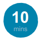

Kowa da Kowa Zai Iya Zama Mai Tsaron Manufa!

Sakamakon Koyarwa
• Dalibai zasu fahimta abinda ya kunshi da
Mai Tsaron Manufa domin Muradan Raya
Kasa Masu Dorewa (SDGs).
• Dalibai za su gano da kuma fahimta fasaha da ilimi
dasu ka riga suka sani domin taimakawa SDGs.
• Dalibai za su koyi gaskatan ra’ayinsu
Fadada Muhalli Tsarin Darasi
Manufar wannan tsarin darasin shine ya karfafa wa
dalibai kwarin gwiwa da cewa kowanne su zai iya
zama Mai Tsaron Manufa (goalkeeper) ya kuma ya
dauki matakin na SDGs ta wurin fahimtar kowanne
bukatar da zai kunshi cin nasaran manufar, dalibai za
su gano, su yaba ma fasaha mutane daban-daban
da na kansu. Wannan tsarin darasi mahada ne da
sharudda na 2018 OECD Pisa Assessment framework:
Global Competence. Wanda ya bayyana cewa “karfn
iya bincika wani duniya da sha’awa al’amurran da suka
shaf fahimta, da yaba hangen zaman gaba, da yadda
duniya tana hangi tafyar a cikin flli ta hanya da ta
dace, da hulda da jama’a masu ban-banci al’adu domin
cigaba jama’a da dorewar cingaba”
http://www.oecd.org/pisa/pisa-2018-global-competence.html
Kayan Aiki
Za a iya yin wannan darasi ko da yanan gizo ko ba shi.
Da yanan gizo: kamara ko waya mai kamara/kwamfuta
domin saka hoton dalibai a cikin manhajar manufa na
duniya (goalkeeper me app).
Ba tare da yanan gizo ba: Alkalami, kayakin yin fanti
domin zana hotuna, madubai da kuma zanen hoto aiki
na Mai Tsaron manufa.
Bayanin Kula Zuwa ga Malami
Wannan darasi ya kunshi dalibai su tuna da fasahan su, halinsu da iliminsu ta wurin samarda hoton Mai Tsaron Manufa.
Wasu dalibai ba zasu ji dadi in a saka hotonsu, saboda haka, za a tambaye su, don su samar da hoto Mai Tsaro na wani
dalibi ko shaharere Mai Tsaro na SDGs. Za a iya ganin wadanan manufof ana bai da su Muradan Raya Kasa Masu
Dorewa ko kuma Muradan Raya Kasa. Yi amfani da wanda ka ke so.
Wannan darasi ya kunshi saka hotuna dalibai a yanan gizo. Ka tabbatar sun yi daidai da bayanin tsari na makarantan
ka da kiyaye siyasa da sheruda Mai Tsaron manufa app:
http://cdn.worldslargestlesson.globalgoals.org/2018/06/goalkeeper-privacy1-1.pdf
Amincewa
Godiya na musamman zuwa ga Chris Gadbury, Twitter: @chrisgadbury www.magicstorybooks.com,
Memory Banda: https://memorybanda.blogspot.com/
Ndubuisi Uchea & Hayel Wartemberg: https://wordonthecurb.co.uk/
Odeogbola Ayodele, Adeeko Olalekan: Abeokuta Grammar School, Abeokuta and Baptist Boys’ high School
Abeokuta (duk a Nijeria)
Mataki na 1- Tuna da Fahimta Baya
A lura: Wannan darasi ta doka cewa dalibai suna da cikaken sani akan SDGs. Mahada zuwa babban
darasi na duniyadarasi ta 1, wanda ya gabatar da dalibai zuwa ga manufofn, za a samu a wannan shaf
at http://worldslargestlesson.globalgoals.org/resources-for-teaching-the-sdgs-in-nigeria/
Tambaye wadannan tamboyoyi domin auna fahimtar dalibai akan SDGs. Za a iya yin wanna ta wurin tunani, raba
aikin ko dukka aikin aji: Menene SDGs take kokarin cinma? Me yasa suna da amfani? Manufof guda nawa ke ciki?
Mataki Na 2: Gano Wa Ke Taimaka Cin Ma SDGs?
Tambaye dalibai wanan tambaya: Wa ya doki nawaya cin ma Burin Manufa na duniya?
Sakamako:- Gwamnati, kungiya masu zaman kansu, su UN, makarantu, yara, manyan mutane, KOWANNE!
Tambaya nagaba: Ko matasa suna da nawaya cin ma SDGs? Ko matasa zasu iya kawo canji SDGs?
Tattauna wasu amsoshi da ra’ayi kuma ka bayyana masu da cewa ko daga wurin yan yara, yara da matasa za’a iya
samu manufa mai muhimmanci. Duba babban duniya Darasi na 2 (http://worldslargestlesson.globalgoals.org/resources-for-teaching-the-sdgs-in-nigeria/) domin kallo misalai, matasa dasu dokin mataki cin ma manufar su. Da/ko ka nuna wa
dalibai misalai daga babban duniya darasi taswirar duniya don kale abinda wasu matasa suna doka domin cinma burin
manufar duniya
Bayyana masu cewa wadannan mutane za a iya kiransu masu Tsaron Manufa, domin sun tashi tsaye sun doki matakin
domin SDGs. Mutane ne masun so makarantansu, gidajen su, angwanesu da kasan su ta gyaru don kowanne ya rayu da
kuma kullawa game da kare su domin na gaba. Suna amfani da manufa domin hada matakinsu da manufa tsarinsu don
marda duniya mai inganci.
Dalibai za su iya karanta akan wasu matasa masun tsaro manufa daga ko ina a duniya a cikin Appendix 1-4.
Mataki 3: Hada Fasaha Wanda Mutane Suna Da Su Tare Da SDGs
A lura: A wannan aiki babu amsoshi na kwarai da na karya. An shirya aikin ne domin tattauna tsakanin
dalibai ta wurin yin tambaya kai tsaye wanda zai sa dalibai su kaluballance tunannin kansu su da ra’ayinsu.
Karanta da babban murya/nuna abinda wani ya rubuta da ke kasa daga Mai Tsaron Manufa Memory Banda (Dubi
Appendix 3) domin karin bayyani a kan aikin da Memory ta yi domin cin ma Buri Manufar 5).
“Ba wani Karin karf domin wani ya zama Mai Tsaron Manufa,kowanne za iya zama Mai Tsaron Manufa ta wurin zaba
kowanne daga cikin SDGs da kuma fara turawa domin cin gaba”.
Tattauna wadannan kalamai da ke sama a aji- dalibai su yadda? Bayyana cewa kowanne yana da fashaha da ilimi
dabam-dabam don cin ma burin manufa. Yadda dalibai sun yi amfani da wadannan SDGs domin cin ma burin shine
da muhimmancin. Kamar yadda Mai Tsaron Manufa ya dauki kuduri, ya tashi tsaye ya dauke mataki-ko ya samu koma
baya ko cizon yatsa, ya kasance da burin sa.
Nuna yadda ‘gamuwa tsakanin SDGs da aikin zanen gado (Appendix 5). Wannan aikin zai taimaka wa dalibai su gano
irin fasaha da suke so don su ci ma burin kowane manufa daya. Nuna kalmomi masu launi kore goma sha biyar (15)
a cikin (Appendix 6) (za ka shirya yanda zai yi daidai da naka makarantan) dauki kalma daya don farawa misali kera.
Rubuta shi a cikin murabba’i mai jan launia tsakanin aikin zanen gado.
Na gaba, tambaye dalibai - Yaya fasaha kikira zai taimaka cinma manufa? Wani manufa zai f shafa? Karfafa wa dalibai
su gaskanta ra’ayinsu da zabin su. Karbi shawara kakila daga aji ka hada kera da zabin manufa ta wurin zanen layi
daga kalma zuwa manufa.
Dalibai za su kamala sauran aiki ta wurin zabe wani wasu fasaha a daga cikin wanda aka jera (Appendix 6) da tunani
suna da amfani don cin ma manufa da hada fasaha domin cin ma manufa wanda suna tunani.
Cikin aiki, tsaya da aji, ka tambayi dalibai wani fasaha wanda suka gano mai muhimmanci. Tambayi dalibai su raba
wasu ra’ayi, don me suka zabi fasaha domin manufa na musama.
A lura: Ba gamsheshen amsa a nan, ya dangata ga yadda dalibai suna ji. Wasu fasaha za su iya zama daidai ga
dukan manufar
Kalubale: tambaye dalibai me yasa yana da amfani a sami mutane dabam-dabam da fasaha, ra’ayi da ilimi dabam
– dabam don taimaka cin ma buri manufa? Saboda matsaloli da duniya ta ke fuskanta yayi yawa kuma lokacin da
dama ba amsa
Mataki na 4: Farga Iyawa Mutum
Mataki na gaba shine dalibai su gano na su fasaha. Gayace dalibai su kashe wasu lokaci suna tunani
amsa game da tambayoyi. Za su iya hada hannu da abokin tarayya domin shawara.
1. Menene na musamman a kan ka?
2. Menene game da kai wanda ya baka kwarewa ka zama Mai Tsaron Manufa?
3. Wani irin baiwa ne da kake da shi wanda zai saka zama Mai Tsaron Manufa?
4. Wani irin mutum ne kakeso ka zama inda kayi girma?
Karfafa wa dalibai su yi tunani game da zabin kalmomi masu yawa. Yanada amfani a fahimtar da dalibai dacewa
kalmomi da za su zaba bana ganin idoba, amma kalmomi wanda za su bayyana halayyar, fasaha da ilimi. Don sauri,
za ka iya maida su a rumbu kalmomi a cikin Appendix 6.
Mataki na 5: Samar Da Hoton Mai Tsaron Manufa
Nuna masu App na Mai Tsaron Manufa. Bayyana wa dalibai da cewa zasu zaba kalmomi guda uku (3) wanda
sun yadda zai yi masu amfani yayin da sun dauki matakin SDGs. Ka yi amfani da dama ka bayyana yadda
yarda da kowa na da humininci kuma kowanne ra’ayi dabam – dabam da begen kowa shi ake bukata ga cin
nasara SDGs. Zaka iya nuna misalai hoto Mai Tsaron Nuna masu App na Mai Tsaron Manufa. Bayyana wa dalibai da cewa zasu zaba kalmomi guda uku (3) wanda
sun yadda zai yi masu amfani yayin da sun dauki matakin SDGs. Ka yi amfani da dama ka bayyana yadda
yarda da kowa na da humininci kuma kowanne ra’ayi dabam – dabam da begen kowa shi ake bukata ga cin
nasara SDGs. Zaka iya nuna misalai hoto Mai Tsaron manufa- http://perfectdaylondon.com/projects/goalkeepers/
Dalibai zasu sa hoton kansu a kan manhaja Mai Tsaron Manufa app, za su iya juya hoton bisa ga launi da kalmomi
(dubi Appendix 7 domin karin bayyyani). Malamai za su iya nuna yadda za iya amfani da hoton mulitimedia ko kuma
wayan hannu (musamman makarantu da ba tsada).
Madadin: Idan kamara / waya mai karama ba su, kayi amfani da madubi, ka gayaci dalibai su yi zane ko fanti,ko hoto
kan su. Dalibai za su yi amfani da hoto da kuma zabbabu kalmomi guda uku don kikira hoton Mai Tsaro Manufa (dubi
hoto – Mai Tsaron Manufa a cikin Appendix 8). Hoto Mai Tsaron Manufa za a iya nuna ta a matsayin aji ko makaranta.
Kalubaci dalibai ko akwai wani wuri da za a iya nuna hoto. Ina zasu iya nuna hotuna Mai Tsaron Manufa da zai amfane
jama’a game da SDGs?
Mataki Na 6: Yanzu Ka Shirya – Dauki Mataki Na Farko!
Dazara dalibai sun gano fasaha da ilimi wanda suke da su don su zama Mai Tsaron Manufa, suna
shirye su dauki mataki domin SDGs! Tambaye dalibai wadannan tamboyoyi su tattauna a matsayin aji.
• Wani mataki ne za ka fara dauka wa domin Manufar yau?
• Me kake so kayi da Manufar ka a matsayi aji?
• Wani tambayoyi kake da shi game da Manufa?
Kalli Babban Darasi Na Duniya Karo ta 3 http://worldslargestlesson.globalgoals.org/resources-for-teaching-the-sdgsin-nigeria/ domin samu wahayi yanda za’a fara yau!
Don Allah raba hoton Mai Tsaron Manufa da mu! Hada hannu da matasa dubu-dubai masun Tsaron Manufa ta wurin
koyar our interactive map.
Za ka kuma iya tuwita mu a @WorldsLessonNG, Facebook @WorldsLessonNG , Instagram
@WorldsLessonNG ko email mu worldslessonnigeria@outlook.com
Karin Ayuka:
• Nuna ma dalibai yanayi aiki a http://worldslargestlesson.globalgoals.org/ samun wahayi yanda za’a ci ma SDGs.
• Kirkira Al’ummai Na Aiki domin su taimaka kawo
canji a gidan al’ummai. http://worldslargestlesson.globalgoals.org/student-led-change-projects/
• Kalli wannan gajeruwan fm (Vimeo link https://vimeo.com/268764152, Youtube link https://www.youtube.com/watch?v=lf4jpEhRubs) – Don Allah a lura da cewa
wannan flm a turance yake) akan sannane mutane
daga can baya. Tambayi dalibai wadannan tambayoyin
da sun biyo: Idan wadannan mutane suna da rai yau ko
za su zama masu tsaron manufa? Wanne Manufa kuke
tsamani zasu tsaya ma? Wanne halaye ne za su nuna da
zai bayanna nufn su domin cima abubuwan da suka yi?
• Wannan na iya zama aikin gida ko kuma farkon tahiri
aikin musamman ta bangare adadi tahiri.
• Tambayi dalibai su bincike wasu mutane daga wasu
kasasen duniya wanda suke tunani a kira su Masun
Tsaron Manufa. Tambayi dalibai su shirya gajeren
rubutu da ke bayana duk abubuwan da ya sa sun
cancanci a kira su masu Tsaron Manufa. Menene
dalibai za su iya koya daga wadannan mutane? Ko
za gayace su domin Magana a makarantan ku? ko
taimaka yin wahayi ga matasa domin su dauki mataki?
• Kowa da kowa na iya kirkiro hoton Mai Tsaron
Manufa. Karfafa dalibai su yi hira da iyayensu,
iyalansu da abokai domin yada sako akan SDGs.
• Dalibai su kara bincike akan ayukan Mai Tsaron
Manufa: (https://www.globalgoals.org/goalkeepers)
• wanda ake yi kowace shekara. Su wanene baki
da masu halarta? Wadane matakai suka dauka
domin cin ma manufa? Me yasa bukukuwa kamar
haka na da amfani domin cin ma SDGs?
Appendix 1: Misalai na Matasa Masun Tsaron Manufa daga Fadin Duniya

Olude Marvelous, Ernest Ogunyemi,
da Amao David – Nigeria
Kungiyar Aqua kungiya ce na yara guda uku da suna kamar— Olude Marvelous, Ernest Ogunyemi, da Amao David—sun iya kirkiro ra’ayin aiki na yan asalin da ake kira ruwan bio-sand wanda ya biya bukatan bayar da ruwa mai kau ga mutanen jihar. Wanan aikin na ruwan bio-sand anyi ta da kayaken da ake samu a ko’ina, wanda ke bayana da cewa ba shida tsada samun kayaken kuma ana samun ta a saukake. A yanzu akwai mutanen gari da makarantu su da suke yin amfani da wannan aiki.
1. Wanne wahayi ne ya iza ka dauki mataki akan SDGs?
Daga yanayin wurin zama. Rayuwa tsakann al’umma wanda tsaftacewa na da wuya, kasar da mutane
da dama masun ruwan sha mai kyau suna nan kalila idan an kwantata su da masu yin amfani da waya
mai kafn baki. Bugu da kari ba kowa da ya kula, ba don basu so ba amma domin sun rasa kudin inganta
ta. Saboda haka, abinda muka iya yin tunanin yi shine yadda zamu bayar da namu karamin gudumawa
da zai kawo canji: canji da taimakawa iyalai samun ruwan sha mai kyau ya kuma ceci rayuka.
2. Me ke motsa ka cin gaba?
Motsawa na farko shine na Beyond School Community Challenge, himma ce na Mandela Washington
Fellows Alumni a Nijeria, inda alkalai da mutane da dama suka yi goyon baya aiki ta bayar da
kyautar kudi, da raba gwanintar su da yadda zamu karu. Motsawa na farko Kenan amma a kowace
rana motsawa mu shine tasiri ko da kadan ne, aikin ya ci gaba inganta rayuwar al’ummai da yadda
samarai dayawa suke kokarin yi fye da muka yi. Aikin mu na farko wanda yana akan bio-gas plant
domin dakin gwaje-gwaje na makaranta ya motsa mu mu ci gaba da aiki akan ruwan bio-sand.
3. Mai yasa kuke tunani matasa na da muhimminci domin taimakon cimma SDGs?
Amsar mu shine “I”. bayan haduwa da matasa da dama daga dukan kasar Nijeria da wasu daga fadin
duniya wanda da suka taimaka duniya ya zama ingantaciyar wuri, mutum zai yi mamaki abinda za su
iya yi domin cimma manufa. Matasa na kunshi da wata sihiri wanda ke basu karfn bi da cimma duk
abinda suka sa sa a ra’ayinsu duk da matsaloli da rashin dai dai tawa da zai fado a hanyar su. Duk da
Karin gaskiyar cewa matasa a kewayen duniya yau sun kusa da biliyan biyu sun zama babban karf.
Da fahimtar cewa muna da yawa: ya nuna muna da babban matsayi a duk abinda ya faru a duniya.
Matasa na da muhimminci sosai domin duk kuzarin SDGs su ne manufar su. Matasa ne ke bukatan
ilimi mai kyau domin sune zasu ba da shaida duk abinda zai faru/ba zai faru a duniya gaba daya.
4. Me ma’ana zaman Mai Tsaron Manufa yake gare ka?
Zaman Mai Tsaron Manufa a kowace rana da ya shaf al’ummai ta bangarin mai
kyau; ya na bamu murna da sanin cewa wani a wani wuri na nan lafya; da sanin
cewa yara maza da mata basu bacce ma ga cututuka da ruwa mara kyau ke kawowa
wanda ya karkashe mafarkin mu a Afrika da wasu kasashen duniya dukka.
Appendix 2: Examples of Young Goalkeepers from around th

Comfort Ijaola, Victor Aromose da Afred Adeyemi daga Nigeria
Comfort, Victor da Alfred na ajin K11th da K8th na sannane makaranta gwamnati a bangare kudu ta Nijeria. Suna sanne da kokarin maganta tashin hankali da ya shaf jima’I a Nijeria ta wurin sababbin hanyoyi. Yanayi da yan-mata ana kai masu hari daga al’ummai da ke kewaye da su ya iza dalibai nan su fara shiri dauki matakai masu dorewa a makarantu su. Dalibai sun yi aiki tare domin zana samfurin na Just Nig Project. Wanan aiki shi ne na farko kamar irinsa da aka kaddamar a Nijeria ya zama daya daga cikin Global Diamond Challenge a matsayin World Finalist cikin 2019
1. Wanne wahayi ne ya iza ka dauki mataki akan SDGs?
A matsayin kungiya, mun lura da cewa yan-mata a fadin duniya musanma Nijeria na fuskanta matsaloli
da dama, maf yawa daga cikin su shine kai hari na jima’I da hargitsi. Mun lura cewa wannan matsala
sai kara bunkasa yake a kowace rana bisa ga kididdigar. Kuma labbaru mutane na rayuwar su da
kwarewa sun a sirri ya bamu wahayi daukin mataki akan Manufa ta 5 – Daidaito a tsakanin jinsị.
2. Me ke motsa ka cin gaba?
Fasaha na zamani na da babban tasiri kan cin ma wannan manufa, shi ya iza mu cingaba
daga farko. Bugu da kari sha’awar da muke da shi akan wannan manufa ya bamu karfn
cin gaba. Yin amfani da yanar gizo ya bamu dama tasiri mutane a sikelin duniya. Misalign
wannan shine yanar gizo da muka kirkirar wanda ya zama kashin wuya domin cinma wannan
manufa. Amsoshi masu kyau daga rayuyuka da muka ceci sun iza mu cin gaba.
3. Mai yasa kuke tunani matasa na da muhimminci domin taimakon cimma SDGs?
Muna karni na ashirin daya wanda duniya gaba daya ta cika da matasa. Wannan alama ce mai nuna mana
cewa da zara a samu matasa da sun sa hannu da sha’awa akan wannan aiki haka zamu ji illa sa a cin gaba
jama’a. Sa hannu domin cimma irin wannan manufa zai karfafa matasa samun sha’awa akan wannan aiki.
4. Me ma’ana zaman Mai Tsaron Manufa yake gare ka?
Zaman Mai Tsaron Manufa zai sa mu san abubuwa da ke akewaye da jama’a. Zai taimaka wa al’umma
inda ana bukatan taimako ya kuma sa a sami mutane masu ra’ayi iri daya su hada hannu domin cimma
wannan manufa yadda ya kamata. Wannan na nuna samfurin haddin gwiwa da Saviours wandada sun
hadda gwiwa da Just Nig kamar mai bada shawara (Counsellors), mai aiki akan hakkin mutane (Human
Right Activists), mai ilimin hanyoyi kwantar da hankali (Therapist) da kafofn watsa labarai (Media).
Appendix 3: Misalai na Matasa Masun Tsaron Manufa daga Fadin Duniya

Memory Banda daga Malawi
Memory mace ce mai fafatuka kare aure yara. Memory taki tayi aure a lokaci da take karama, maimakon aure sai ta hada kai da sarkin kauyen sun kikiro dokokin wanda za kare yanci yaran mata daga auren dole. Aiki yasa hukuma su karra shekaru aure yan mata a Malawi zuwa sha takwas (18). Domin karin karatu akan aikin Memory, taba nan here..
1. Wanne wahayi ne ya iza ka dauki mataki akan SDGs?
To, yin garma a cikin wata matalautan kasa ba abu ne mai dadi ba musama yarinya. Mun yi girma ba tare
da yanci zabi rayyuwa ba. Abun bakin ciki ne mutane suna girma ba tare da sani hakkokin su ba wanda ya
kamata a kiyaye da kuma kare ta. Abu maf zaf shine in yan’uwa na mata basu fto su yi magana game da
hakkokinsu musama in a toya masu yanki, su ko suna fama da kalubale rayuwa ta fani ilimi wanda ya zama
yanci kuwa amma maf yawa basu dashi. In na gani aure yara a ciki iyali na, abokai na da ko alu’mma sai na
yanke shawarar in tsaya masu. Aure yara kanana wata mumuna al’ada da ya shaf yan mata da yawa wanda
ya ka mata su zama mutani masu amfani a cikin al’umma. Ina tunani lokaci yayi wanda yan mata za’a basu
dama zama a makaranta da kuma kasance a ciki ayukka na zarman jama’a siyasa, da tattalin arzikin kasa.
2. Me ke motsa ka cin gaba?
Abun da ya bani sha’awa shine cin gaba da muke samu. Yan mata suna tashi bisa da damuwoyin su kuma suna
kalubaci gwamnati. Yan mata suna tashi tsaye don kansu kuma suna nuna bambanci a cikin al’umma, suna zama
shugaba, masu chanji suna tashi tsaye bisa ga yancin su. Wannan ya nuna yanci jinsi (Manufar 5) abu mai ciwuwa.
3. Mai yasa kuke tunani matasa na da muhimminci domin taimakon cimma SDGs?
Matasa su ne sun f shaf da karanci kowane manufa. Ya na da amfani matasa su sa kai a
kowane aiki wanda ya shaf rayuwan su a ko ina a duniya. In ba tare da matasa ba, manufar ba
za ta ciwan ba. Babban muhimmicin manufa na SDGs shine kada a bar kowa a baya. Matasa
na da gurbi akan komai soboda kafuwar ganuwa mai dorewa ma tsara mai zuwa.
4. Me ma’ana zaman Mai Tsaron Manufa yake gare ka?
Zama Mai Tsaron Manufa abu ne da ya bani dama in gani malalolin ayukka na zaman jama’a da kuma sani mai ya
kamata a yi da kuma doka matsayi a kanta da kuma yin tunani dabam da bada gaskiya a gare ka da cewa chanji zai
faru. Ba wani asiri da mutum zayi kamin yi zama Mai Tsaron Manufa, kowanne yana da dama za zaman Mai Tsaron
Manufa ta wurin zabi kowanne SDGs da kuma fara turawa don amfani. Chanji yana faru ne in an dauki mataki.
Appendix 4: Misalai na Matasa Masun Tsaron Manufa daga Fadin Duniya

Ndubuisi Uchea da Hayel Wartemberg daga UK
Ndu da Hayel sune sun kafa Word on the Curb – hukumar sa ido akan al’adu da suka du’ufa don gane labaru, gano al’ adun matasa. Ndu da Hayel suna so bincika rashin daukar halin da yan wata fara addabar jama’a dabam – dabam duniya gina, kalma akan tsare kamar yadda kayan aikin, ka yi wannan ta wurin kawo jama’a akan wani dandamali don bayyan labarun su da kuma jin ta wasu. Wande zai taimake iri da kasuwance ta wurin basu fllin a cikin ala’ada matasa ta tsare da sadarwa zamani kuma a lokaci daya samar da wa matasa da kuma su koya cibiyar sadarwa a cikin duniya kirkira.
1. Wanne wahayi ne ya iza ka dauki mataki akan SDGs?
Dukan mu biyu muyi girma ne a cikin Birnni London mai bambancin aladu da kabilun. Da mun je Jami’a
Manchester, mun yi sauri gane wa da cewa muna da bambanci kwarewa akan duniya kuma abun maf
muhimminci shine al’adu dabam-dabam duka sun hadu. Mun lura da cewa akwai dama kikira dan damali wanda
zai bincika labaru jama’a dabam- dabam daga kusa da harabar makaranta, kuma bayan mun gama makaranta
mun ci gaba da wannan aiki. Bayan samu ingantace shedu akan rashin maida da maida. Mun san ila rashin
fahimta al’adu dabam-dabam yanzu fye da da.
2. Me ke motsa ka cin gaba?
Yi amfani da bidiyo yaba mu dama mu koya wa mutane a kan sikelin duniya, kirkiro da wadatacce wanda ake iya
gani da raba ta akan dukan kushiyoyin guda hudu na duniya. Misali wannan shi da kwaya bidiyo da mun kira wanda
ake kira: ‘Abunda’ ba koya mana a makaranta ba. Bidiyo yana nuna dalibi yana kalube malamin shi akan koyarsuwa
bakar tahiri a makarantu. Fiye da mutane milliyan arba’in ne suku kalle wannan bidiyo a yana gizo kuma muna samu
email daga Lesotho zuwa Louisiana suna fadi ma na yanda bidiyo iya amfani a makarantu jama’a iyali da al’uma.
Dukka mu muna da iyali daga Najeriya da Gana wanda suke aika sako akan mahanja whatsapp ba tare da sani mun
kera ta ba. Wanan yake sa mu cigaba da tafya.
3. Mai yasa kuke tunani matasa na da muhimminci domin taimakon cimma SDGs?
Akwa matasa da yawa a cikin duniya duniya fye da (kama mutane billiyan 2 tsakanin 10 da 24).
Wannan na nuna cin gaba da chudayan dasu zai zama abu mai amfani, zai zama hanya cin ma buri
manufar. Matasa suna ginshi ki duniya, muna da mahanja whatsapp da mahanja facebook kami iyayan
mu, kuma mun koya musu amfani dasu saboda haka amfani da matasa abu ne mai kyau.
4. Me ma’ana zaman Mai Tsaron Manufa yake gare ka?
Zama Mai Tsaron Manufa tuni ne kullum na wajibi wanda zai taimaka wa al’umma don zama kyakkyawa
muhali don kowa ya zauna. Al’umma masu halaya na Mai Tsaron Manufa yana ba da dama aiki tare ba domin
ka’idar da manufofn duniya kawai ba amma domin nuna zumunci SDGs. Za’a a iya cin ma burin duka.
Appendix 5: Yin hadi Tsakanin SDGs

Appendix 6: Jerin Kalmomi domin Amfani da App na Mai Tsaron Manufa
Kalmomi da ke a kore sun nuna basiran da aka koya akan SDGs. Kalmomin da ke a shude,kalmomi ne da dalibai za su so gano a App na Mai Tsaron Manufa. Dalibai za su iya zaba uku daga cikin wannan kalmomin domin hoton Mai Tsaron Manufa.
1. Jarumi
2. Kula
3. Kirkira
4. Mai ban Mamaki
5. Kudura
6. Sha’awa
7. Farin Ciki
8. Taimako
9. Kwantanta
10. Mai Kirki
11. Aminci
12. Tsirar
13. Mai Karf
14. Tunani
15. Amintacce
16. Mai Aiki
17. Mai Kasada
18. Mai Zane-zane
19. Dan wasa guje-guje
20. Dan’uwa
21. Masun Yaki
22. Mai yin Canji
23. Mai Zane
24. Mai yin Mafarki
25. Dan kasuwa
26. Muhali
27. Aboki
28. Sabuntawa
29. Shugaba
30. Mai Ilimin Lissaf
31. Mai Waka
32. Fata
33. Mai Ilimin Kimiyya
34. Yar’uwa
35. Mai bada Labari
36. Dalibi
37. Hangen Nesa
Appendix 7: Umurnai yanda za a yi Amfani App na Mai Tsaron Manufa
1. Dauki hoton selfe ko ka roki abokin ka ya dauka maka hoto. Ka tabattar ana ganin
fuskan ka da kau kuma kana mulmushi. Fuskar ka kawai ake bukata banda jiki
2. Ziyarci App na Mai Tsaron Manufa http://wllgoalkeeperme.globalgoals.org/
3. Taba sifar camera domin daukar hoton ka daga fuskan computer

4. Yi amfani da abubuwan aiki a sama dama gefen hoto domin gyara. Abun aiki A ana
amfani da shi domin rubutu, akwai wurin canza koda wanda keke so
5. Kanin ajiyar hoton ka na Mai Tsaron Manufa, ka tabatha ka
karanta Terms and Condition of the Goalkeeper app.
6. Akwai yanayi guda biyu na ajiyar boye hoton ka, ka taba koda domin buya a computer
ko buya a wurin ajiyar hoto na computer inda za’a iya raba shi zuwa ga al’ummai
7. Don Allah a raba hoton Mai Tsaron Manufa a gida gizo na twitter ko instagram
Twitter: @WorldsLessonNG Facebook: @WorldsLessonNG
Instagram: @WorldsLessonNG email: worldslessonnigeria@outlook.com
Appendix 8: Samfurin Hoton Mai Tsaron Manufa